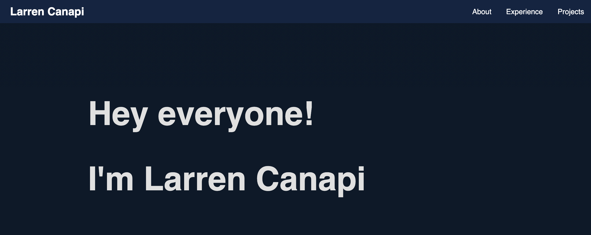

Personal Website V1.0
My first personal website built with HTML, CSS (using Flexbox and Grid), Javascript and the Devicon library
Hey there! I’m Larren and I’m currently a 4th year Software Systems Student at Simon Fraser University. I am focused on becoming a full-stack developer in my career and developing apps that many people will enjoy.
I’m a hard-working person that constantly improves my coding and developer skills through school and co-op’s. In the past, I’ve done co-op’s as a Quality Assurance Tester at Gravit-e Technologies and as a Junior Software Developer at Tailwind Transportation Software.
I like to be involved in my community. In the past, I was the Treasurer and Director of Activities for the Software Systems Student Society. Also, I was a Student Ambassador for the Faculty of Applied Science at SFU.
If I’m not coding or studying, I’m either playing video games, practicing guitar, or hanging out with friends.
Here are some technologies I've used in the past
Tailwind Transportation Software
Junior Software Developer
July - Dec. 2021
Gravit-e Technologies
Quality Assurance Tester
May - Aug. 2020
Simon Fraser University
Faculty of Applied Science Ambassador
July 2019 - Apr. 2020
Software Systems Student Society
Director of Activities
May 2019 - Apr. 2020
Software Systems Student Society
Treasurer
May 2018 - Apr. 2019
My first personal website built with HTML, CSS (using Flexbox and Grid), Javascript and the Devicon library
Discord Bot that queries Youtube songs and lyrics. Built in Python using the DataPrep and Discord library